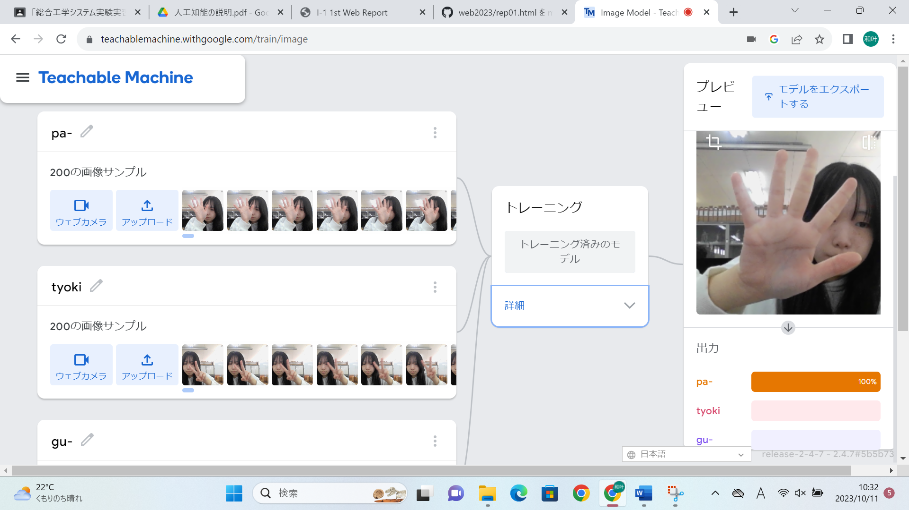
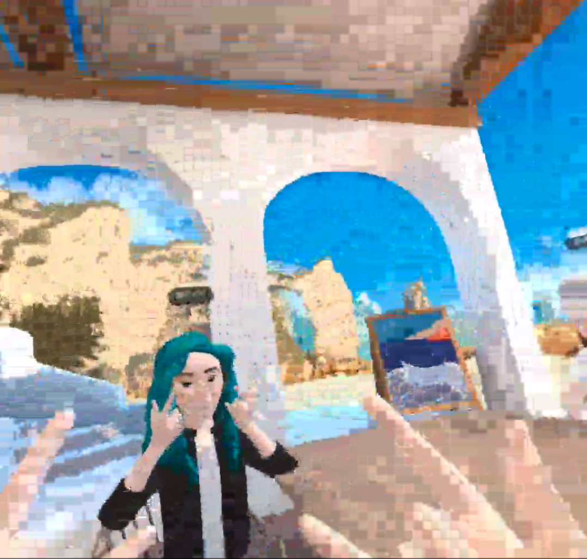

第2週目
2-1 １週目のレポートをHTMLで作る
１週目のレポート
1.内容
githubを使い、作られているテンプレートに画像や内容、感想を書く。
2.感想
ホームページを書いているときは、どこにも字が書かれるようになるかが分からなかったので、少し不安だったけど、ちゃんと変わっていることを確認してから、書いていくのが楽しみになった。画像がちゃんと指定されたところに入っているのか、確認するまで、そわそわしていたけど、画像がきれいに入っていてうれしかった。
2-2 機械学習体験

1.内容
人工知能や機械学習、深層学習についてを学び、知識をつける。TeachbieMachineを使い、出している手が、パーかチョキかグーかどれであるかを区別できるように機械学習させる。
2.感想
画像150枚ずつぐらいで、区別できるようになることに驚いた。隣の人の手だと、反応しなかったので、もっといろんなサンプルを集めて精確にしたいと思った。
2-3 VR（バーチャルリアリティー：Virtual Reality）会議室の体験

1.内容
VRゴーグルを使い、バーチャル空間にある会議室に参加する。
2.感想
コントローラを使ったり、実際に自分の手をバーチャル空間で動かしたりして、会議室にいるほかの人とコミュニケ－ンを取ることができてとても楽しかった。VRゴーグルが重くて、頭の前の方が痛くなったので、もっと頭に負担が入らないようなVRゴーグルを作りたいと思った。